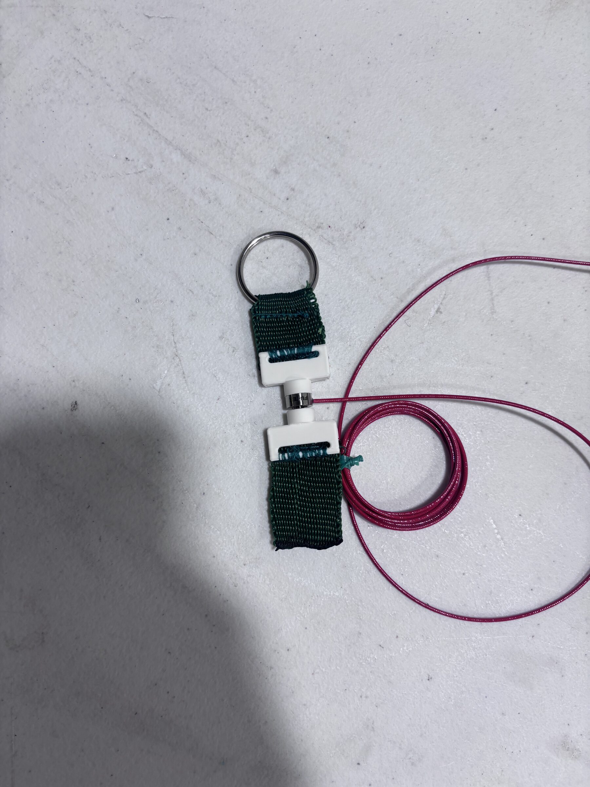
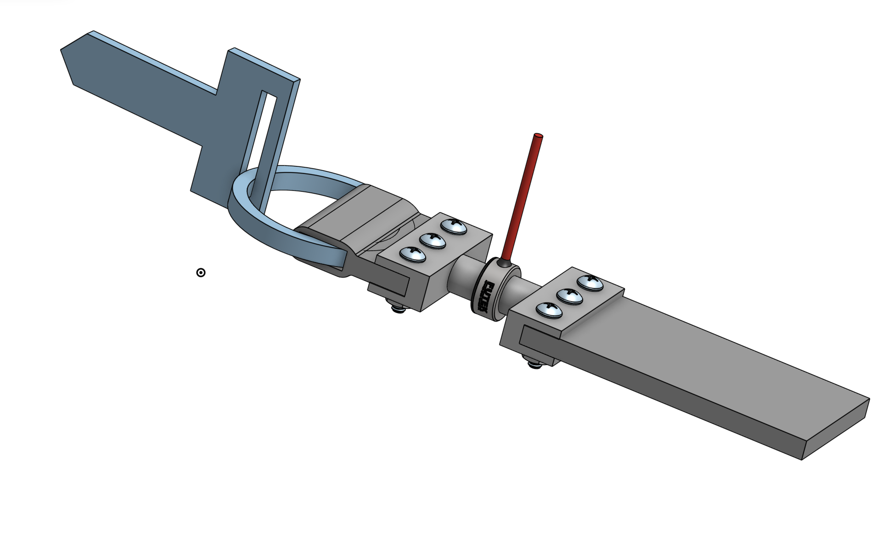
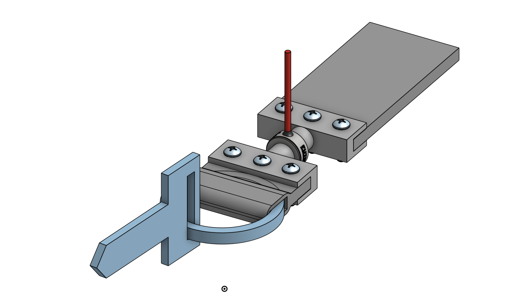
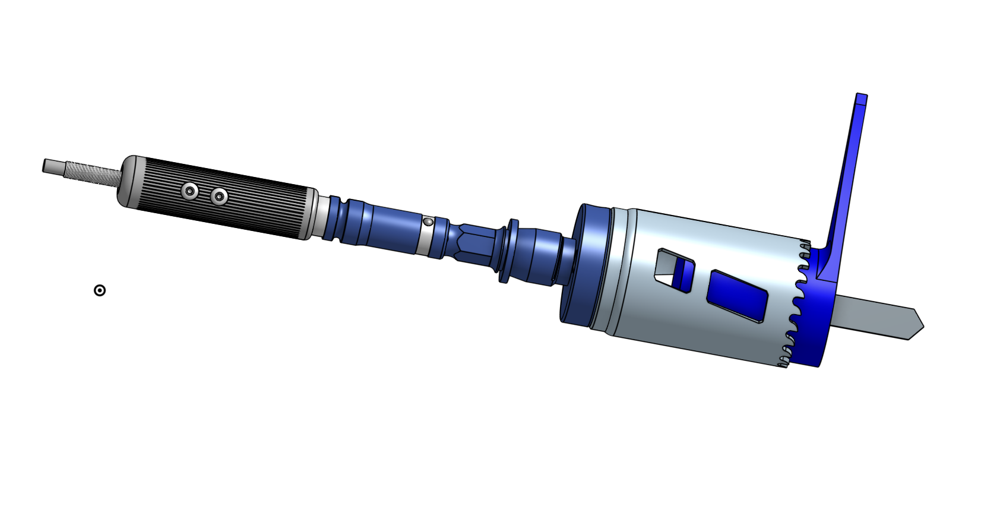

Side project · Playing around with my new 3D printer (Bambulab P2S) :)
These were all for a product failure analysis of an ignition switch. I printed parts to test with, got a set of constraints, and designed around them.



